A set of calligraphic & engraved logo directions for the portfolio, shown in the site’s own palette. The aim: something that reads as premium and personal without competing with the bold Anton headlines. Toggle the background to see each on dark and light. Tell me the number(s) you’re drawn to and I’ll refine, vectorise, and wire it through the site (nav, intro, favicon, watermark).
